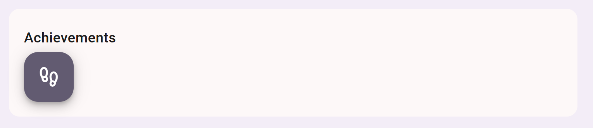

PROJECTS
August-December 2024
Graphics Engine
August-December 2024
User Achievement System
February 2024
NYT Sentiment Analysis
April 2023
Akari
November 2022
August-December 2024
August-December 2024
February 2024
April 2023
November 2022
Private profle page

Public profile page (only shows earned achievements)
Built with: Angular, FastAPI, SQLAlchemy, Jest, Docker, Figma, HTML, CSS, Typescript, and Python
I worked on a team of 4 to add an achievements section to profile pages on an internal CS website
at UNC. Our team managed the entire lifecycle of the feature; we wrote user stories, designed
wireframes, managed a project board, maintained documentation, and deployed our feature to an OKD
platform.
In the backend, we created an achievement entity, added an achievements table and a user-achievement join table
to the site's database, and created a backend service that updated each user's achievements every
5 minutes.
In the frontend, we added an achievements section to each user's public and private profile page, with purple icons
representing achievements the user had earned, gray icons representing those they had yet to earn, and a progress bar for each
achievement category.
Built with: C, Bash, Linux
I developed a program in C for modifying quicksave files in a terminal-based version of Tetris which ran
in the Bash shell on a Linux server. Tetrashell supported 3 commands: modify, which allowed users to
change the score and lines-played values; check, which verified if a quicksave file appeared legitimate;
and rank, which ranked the user's quicksave files against all other quicksaves on the server.

Built with: Express, Chart.js, NYT API, NLP API
I worked on a team of 2 to create an application that tracked the sentiment of headlines in the New York Times over a given date range. We used the NYT API to fetch article headlines and abstracts for the given date range, then concatenated the headline and abstract and ran them through an NLP API. The NLP API determined whether the article had a positive or negative tone and gave it a score on a scale from -1.0 to +1.0. We then used Chart.js to graph NYT headline sentiment over time.

Built with: Java, JavaFX
Akari is a puzzle game where the player must place lightbulbs on the game board. Each white square must be
illuminated (within the direct path of a lightbulb), each blue square must have the appropriate number of
lightbulbs touching it (0-3), and two lightbulbs cannot share a direct line of sight.
I programmed the game's logic in Java and created its interface using JavaFX.
Built with: C++
Over the course of a semester, I programmed a graphics engine capable of handling blendmodes, tilemodes, efficiently drawing convex polygons, winding-fill paths, applying transformation matrices to paths, approximating curves, linear gradients with arbitrary numbers of colors, triangular gradients, triangular meshes, and tessellation.